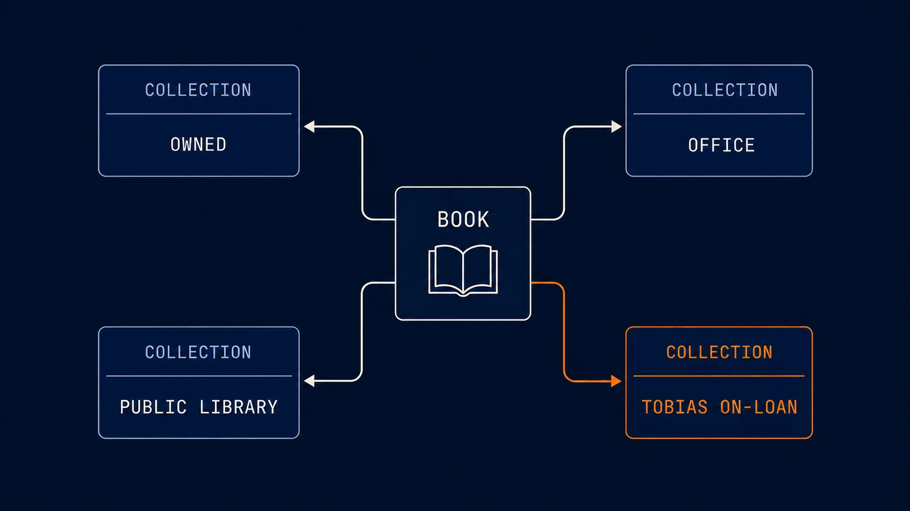
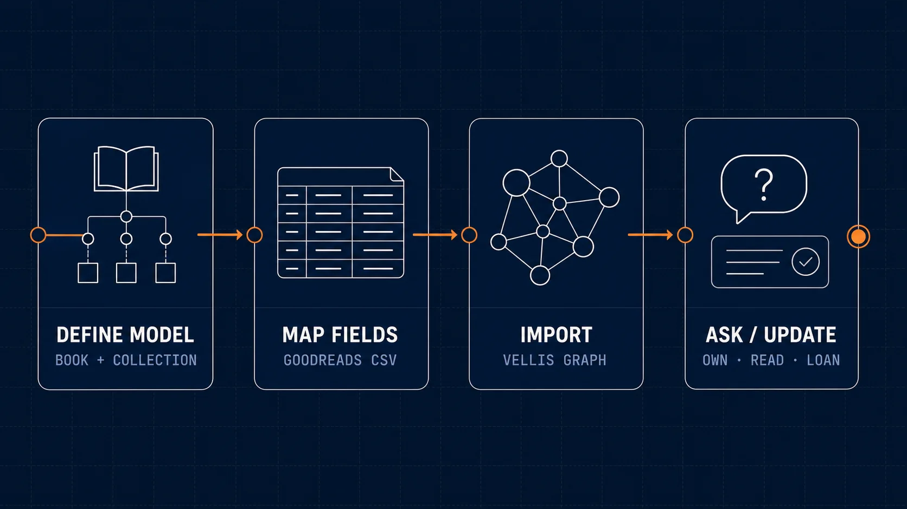

I wanted to see what it would take to make my initial Vellis graph more like my own. My first project was something familiar and bounded: adding my personal book collection to my graph, starting with the library I had already tracked in Goodreads.
This was less a formal integration project than an experiment in adapting Vellis to a part of my everyday life. I wanted to ask simple questions such as “Do I already own Starter Villain by John Scalzi?” or “Which book comes next in this series?” I also wanted to record changes conversationally—for example, adding several books and setting their reading statuses without editing rows by hand.
Starting with Goodreads
Goodreads makes it easy to get a copy of your library. From My Books, I went to Import and export and selected Export Library. The resulting CSV includes quite a bit: titles, authors, ISBNs, publishers, publication years, page counts, shelves, reading status, dates, reviews, and ratings.
My goal was not to build a universal bibliographic system or reproduce a formal standard such as Dublin Core. I wanted a practical personal library built around the information Goodreads already tracked and the questions I was likely to ask.
Extending the Everyday Life schema
I started a Claude CLI session on my Raspberry Pi and used the rtg-schema-design skill to extend Vellis's Everyday Life starter schema. The central request was simple: add Collection and Book entities.
Collection turned out to be important because “my books” is not a single physical or logical pile. A collection can represent books I own, books borrowed from a public library or another person, books downstairs, books in my office, or books I have loaned to someone else. That gives location and custody a place in the graph without overloading the book itself.
For Book, I kept the model broad enough to preserve useful Goodreads data: title and series information; primary and additional authors; ISBN and ISBN-13; publisher, binding, page count, and publication years; reading and added dates; bookshelves and status; and my review and ratings. I added isbn13 and series_sequence after the initial pass.
One deliberate simplification was keeping the author as book metadata rather than linking it to a Person entity. Modeling authors as people may become useful later, but I did not need it to make the collection valuable. This was a good reminder that a personal graph does not have to model everything perfectly on day one.

A useful discovery
The schema work produced one of the more useful moments in the project. At first, the model tried to update only the JSON representation of the schema rather than the underlying model. The tests caught the mismatch and redirected the work. That gave me more confidence than a change that merely appeared to succeed: the project’s checks were enforcing how schema extensions are supposed to be made.
Importing the library
Once the graph schema was updated, I switched back to my Mac and treated the Goodreads import as a script-driven task, starting with a plan. Separating the work into two phases—first establish the model, then import the data—made the process easier to reason about. It also left room to normalize fields and decide how Goodreads shelves, statuses, and series information should map into the graph.
The result is a much more natural way to interact with my library. I can check whether I own a particular title, look for gaps in a numbered series, add the first four Dungeon Crawler Carl books while marking the first three as read and the fourth as currently reading, or move Snow Crash into a new “Tobias on-loan” collection. With the right series data, I can also ask what comes next in the series I'm reading.
There is still plenty to explore, such as enriching the graph with genre and subgenre data or adding a Goodreads hook to keep additions and reading-status changes synchronized. For now, though, this project has already demonstrated the part of Vellis I was most interested in: building context I own, can correct, and can keep extending as my personal graph becomes more useful over time.
